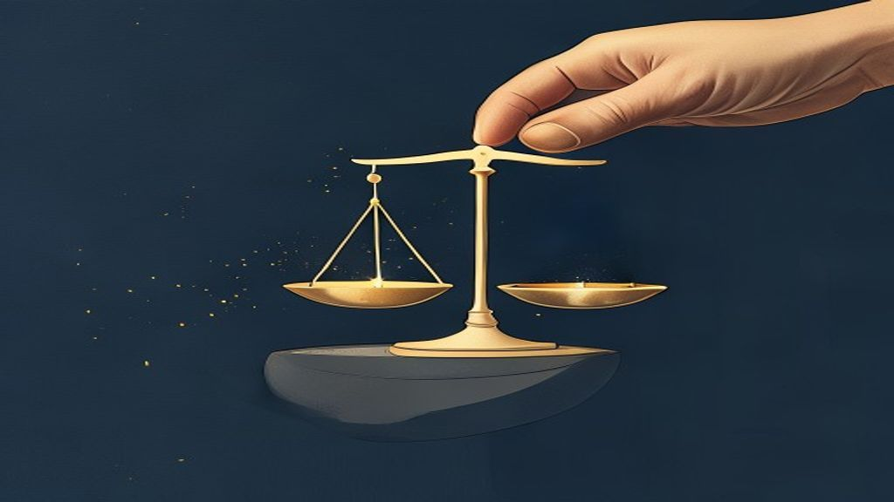
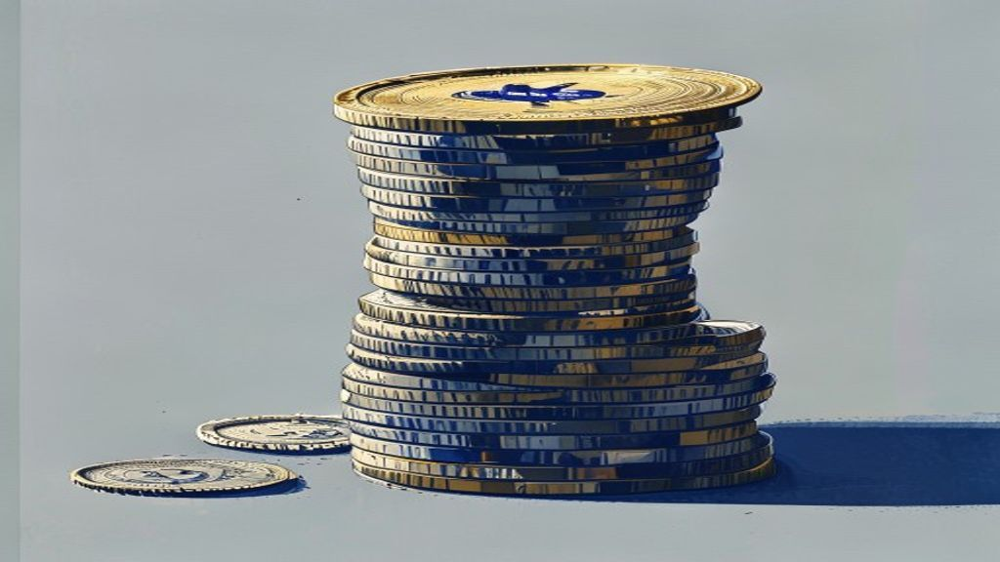
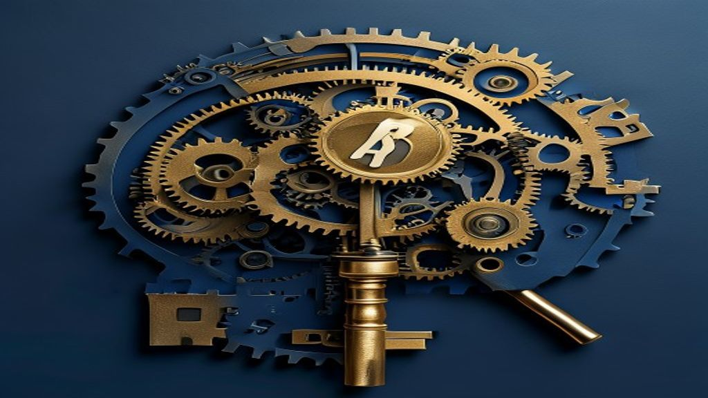
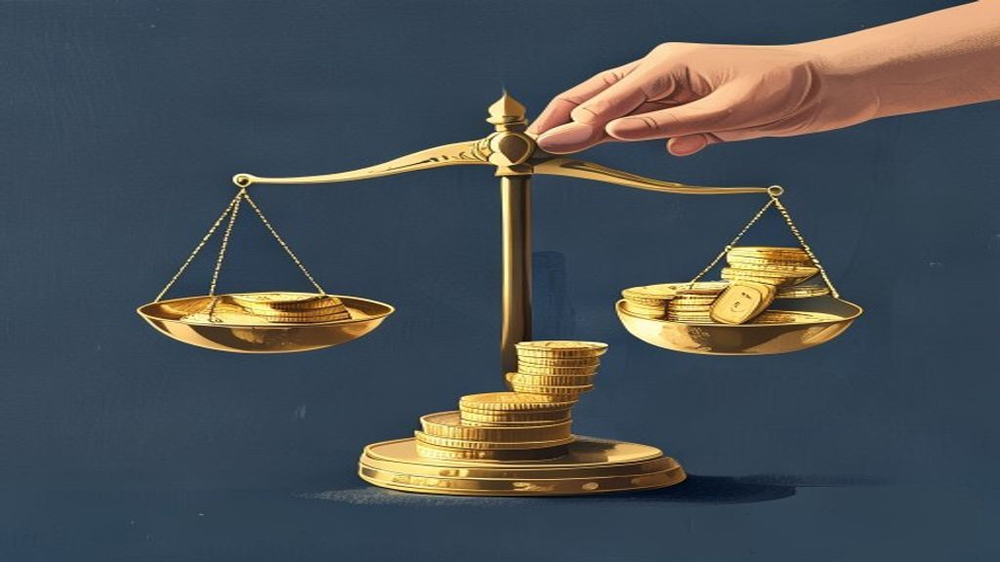

Macro & Markets
What global and Indian macro means for your portfolio.
Claiming Deceased Mutual Funds: SEBI Simplifies Transmission
The Securities and Exchange Board of India (SEBI) has streamlined the process for claiming mutual fund units of a deceased investor. The new framework, implem.
MakeMyTrip India IPO: What a Confidential DRHP Means for Investors
MakeMyTrip has confidentially filed a Draft Red Herring Prospectus (DRHP) with SEBI for an India IPO. This filing indicates the online travel giant's intent t.
SEBI Clears Automatic SWP, STP for Demat Mutual Funds
SEBI has now permitted automatic Systematic Withdrawal Plans (SWP) and Systematic Transfer Plans (STP) for mutual fund units held in demat accounts. Previousl.

Dearness Allowance Hike: Understanding Its Impact on Your Finances
Dearness Allowance (DA) is a vital component of salary and pension for Central Government employees and pensioners in India. It serves as a cost-of-living adj.

SEBI's Vision: Unpacking India's Life Cycle Funds
Life Cycle Funds are an investment approach where asset allocation automatically adjusts based on an investor's age or remaining investment horizon. SEBI has .

India's CPI at 4.38%: Calculate Your Personal Inflation
India's Consumer Price Index (CPI) inflation was reported at 4.38% in June 2026, representing a national average. Your personal inflation rate can significant.

DA Hike: Understanding Dearness Allowance Types and Calculation
Dearness Allowance (DA) is a component of salary paid to government employees and pensioners to offset the impact of inflation. It is calculated as a percenta.

US Inflation Data: What it Means for Your Indian Investments
Upcoming US inflation figures and Federal Reserve policy decisions could significantly influence global financial markets. A higher-than-expected US inflation.

Bank Holidays in July: Plan Your Finances Around Upcoming Closures
Banks across India, including major players like SBI and HDFC, will observe several holidays between July 13 and July 19, 2026. These closures are due to vari.

Bank Holidays: Why July 11 Sees Banks Closed Across India
Public and private sector banks across India are closed today, July 11, due to the second Saturday rule. This closure is a standard practice implemented by th.

Why Cupid Share is Rising: Understanding the Factors Behind the Rally
Cupid Ltd. has seen a significant surge in its share price, driven by strong business fundamentals and market sentiment. The company's focus on manufacturing .

July 2026 DA Hike: Understanding the 3% Increase Likelihood
Central government employees and pensioners are likely to receive a 3% Dearness Allowance (DA) hike in July 2026. The final revision hinges critically on the .
Gold & Silver Prices Today: Geopolitics and Dollar Impact
Global gold and silver prices recently edged lower in international markets, influenced by rising geopolitical tensions and a stronger US dollar. While Middle.
FPIs' Cash Buying Masks Caution in India Markets
Recent Foreign Portfolio Investor (FPI) cash purchases in Indian equities do not signal a strong bullish shift in sentiment. Market experts suggest these purc.
Dearness Allowance Hike: Decoding Employee Demands and Your Finances
Central government employee groups are pressing for several key changes related to Dearness Allowance (DA). A primary demand is the merger of DA with basic pa.

Gold Prices Dip: What Could Spark the Next Rally?
Gold prices have recently experienced a correction, moving away from their previous highs due to various global factors. A strong US dollar and rising global .
Gold Prices Dip: What Could Spark the Next Rally?
Gold prices have seen a recent correction, moving away from their previous highs. Key global factors like trade policy, inflation, and geopolitical tensions a.

Carlsberg India IPO: What It Means for Indian Investors
Danish brewing major Carlsberg has filed draft papers for an Initial Public Offering (IPO) of its Indian subsidiary with SEBI. This move allows Carlsberg to u.

SEBI's Performance-Linked Fee vs. TER: What It Means for Your Mutual Funds
SEBI has proposed a new framework to link mutual fund fees directly to a scheme's performance. This model aims to replace or supplement the existing Total Exp.

Gold Loans Surge: What RBI's Financial Stability Report Reveals
Gold loans are now India's fastest-growing retail credit segment, as per the latest RBI Financial Stability Report (FSR). They have shown a remarkable Compoun.

SEBI Proposal: FPIs in Physically Settled Commodity Trades
SEBI is considering allowing Foreign Portfolio Investors (FPIs) to participate in physically settled commodity derivative contracts. This initiative aims to r.

RBI Cracks Down on Bank's 'Dark Patterns' and Mis-selling
The Reserve Bank of India (RBI) has issued new guidelines to curb unfair sales practices by banks and financial service providers. These guidelines specifical.

Zerodha's New Life Cycle Funds: A Practical Guide
Zerodha Fund House has launched India's first life cycle mutual funds, a new category introduced by SEBI in February 2026. These target-date funds automatical.

SEBI Eases NISM Certification for RMs & Sales Staff
SEBI has simplified the National Institute of Securities Markets (NISM) certification requirements for specific roles in the financial sector. This relaxation.

Mutual Funds: 5 Red Flags Signalling Time to Exit
While mutual funds are excellent for long-term wealth creation, holding them indefinitely without review is not always the best strategy. Regularly assessing .
Dearness Allowance: Understanding Your DA Hike Calculation Formula
Dearness Allowance (DA) is a crucial component of salary and pension for central government employees and pensioners, designed to offset inflation's impact. T.
Planning Ahead: Understanding Bank Holidays from June 25 to 28
Indian banks will observe regional holidays and weekends, leading to closures for up to four days between June 25 and June 28, 2026. These closures are state-.
SEBI's New Study on Retail Derivatives Losses in July
SEBI is preparing to release a fresh study in July on the profit and loss outcomes of individual traders in equity derivatives. This new review builds upon ea.
I asked ChatGPT if a Bengaluru DINK couple earning ₹3 lakh a month can retire by 50? Here's what AI said
Achieving early retirement by 50 for a DINK couple in Bengaluru, earning ₹3 lakh monthly, is an ambitious goal requiring meticulous planning and disciplined e.

SEBI's New ETF Framework: What it Means for Your Investments
SEBI has introduced a revised framework for Exchange Traded Funds (ETFs) to enhance market efficiency and investor protection. The new rules aim to reduce tra.

Gold ETF Pricing: How SEBI is Ensuring Fairer Value for Investors
Gold Exchange Traded Funds (ETFs) sometimes traded at prices different from their actual gold value due to outdated reference pricing and fixed trading limits.
Why FCNR Deposits at 6-7.1% are Attractive for NRIs
Foreign Currency Non-Resident (FCNR) deposits currently offer attractive interest rates, ranging from 6% to 7.1%, making them appealing for NRIs. These deposi.
Maximising Remote Work: Budget-Friendly WFA for Indians
Work From Anywhere (WFA) allows professionals to combine work with travel, offering potential financial and personal benefits. Careful financial planning, inc.
Planning Your Finances Around Upcoming Bank Holidays
Indian banks, including SBI and HDFC, observe specific holidays mandated by the Reserve Bank of India (RBI) and state governments. For the week of June 14 to .
Rising US Yields: Impact of Iran Deal & Fed Policy on Your Finances
US bond yields are rising due to expectations around a potential Iran nuclear deal and the US Federal Reserve's monetary policy. A renewed Iran deal could inc.
Why Many Indians Fail at Retirement Planning: 5 Mistakes to Avoid
Many individuals delay retirement planning, missing out on the significant benefits of compounding over time. Failing to account for inflation erodes the purc.
RBI Revives FCNR(B) Swap Window: Can It Attract NRI Inflows?
The Reserve Bank of India (RBI) has reintroduced a special FCNR(B) swap window for banks to attract Non-Resident Indian (NRI) deposits. This mechanism allows .
Specialized Investment Funds (SIF) in India: A Complete Guide
Specialized Investment Funds (SIFs) are a new category of investment vehicles in India, offering greater flexibility than traditional mutual funds. These fund.
Specialized Investment Funds (SIF) in India: A Complete Guide
Specialized Investment Funds (SIFs) are a new category of investment vehicles in India, regulated by SEBI. They offer fund managers greater flexibility in inv.
8th Pay Commission: Fitment Factor 3.833 vs 4 & Salary Hike Impact
The 8th Pay Commission is expected to review and recommend salary revisions for central government employees. A key component of this revision is the fitment .
Rupee at ₹96/USD: Safeguarding Your Investments from Currency Swings
The Indian Rupee recently depreciated to ₹96 against the US Dollar, a significant movement driven by global and domestic economic factors. A weaker Rupee typi.
Gold Falls as US Jobs Data Fuels Fed Rate Hike Bets
Robust US jobs data recently indicated a stronger-than-expected American economy. This economic strength has increased market expectations for the US Federal .
8th Pay Commission: Understanding the 3.5x Fitment Factor Impact
The 8th Pay Commission is expected to revise salaries and pensions for central government employees and pensioners, typically once every decade. A key compone.
Gold Steady Amid Geopolitical Tensions: What It Means for Your Portfolio
Global gold prices are holding firm as renewed geopolitical tensions in the Middle East create market uncertainty. The ongoing US-Iran situation is raising co.

Tax-Aware Retirement Income: FDs, SCSS, and Debt Funds
Inflation is eroding the purchasing power of traditional retirement savings like Fixed Deposits, necessitating a diversified approach. Senior Citizens' Saving.

What is SIF in India? A Complete Guide to Specialized Investment Funds
Specialized Investment Funds (SIFs) are a descriptive term often used for certain Alternative Investment Funds (AIFs) in India, particularly Category III AIFs.
June 2026: Key Financial Events for Your Wallet
June 2026 brings critical deadlines for advance tax payments, impacting salaried and self-employed individuals. The Reserve Bank of India's Monetary Policy Co.
Retirement Goals: Is ₹1 Crore Enough from FDs and Debt Funds?
Relying solely on Fixed Deposits (FDs) and traditional debt funds for retirement income often falls short due to inflation. Inflation steadily erodes the purc.
Specialized Investment Funds (SIF) in India: A Complete Guide
Specialized Investment Funds (SIFs) are a sophisticated investment vehicle in India, regulated by SEBI. They offer greater flexibility in investment strategie.
Gold & Silver Drop: Weighing US-Iran Deal Prospects
Global gold prices dropped by $81/oz and silver by $3/oz on May 27, reacting to potential de-escalation in US-Iran tensions. Precious metals typically act as .

Specialized Investment Funds (SIF) India: A Comprehensive Guide
Specialized Investment Funds (SIFs) are sophisticated investment vehicles offering diverse strategies beyond traditional mutual funds. They are primarily regu.

The 20/4/10 Rule: Preventing Car Loan Stress in India
The 20/4/10 rule is a guideline to ensure your car purchase remains financially healthy and stress-free. It recommends a minimum 20% down payment to reduce yo.
Gold Jumps: Iran Deal Prospects & What It Means for Your Portfolio
Gold prices recently saw an upward movement, reflecting shifting investor sentiment in global markets. This jump was primarily triggered by signals of a poten.
Navigating Global Investments: RBI Limits, UCITS ETFs, and Your Options
The Reserve Bank of India's (RBI) Liberalised Remittance Scheme (LRS) permits resident Indians to invest up to USD 250,000 abroad annually. Many Indian mutual.
Bank Holidays: Plan Transactions for May 25-31 Closures
Banks across various states in India will observe specific holidays between May 25 and May 31, 2024. A significant pan-India bank holiday is scheduled for May.
Gold Drops: Waller's Rate Hike Hint & What it Means for Indian Investors
Gold prices recently declined as traders began anticipating a potential interest rate hike by the US Federal Reserve. This expectation arose after Governor Ch.
Dearness Allowance Demands: Understanding the Call for Inflation-Linked Pay
Employee representative groups are demanding a 4% hike in Dearness Allowance (DA) for central government employees and pensioners. A key demand is for an infl.
Navigating Global Investments: RBI Limits, UCITS ETFs & Beyond
Indian investors are increasingly looking to diversify their portfolios globally beyond domestic options. The Reserve Bank of India's (RBI) Liberalised Remitt.